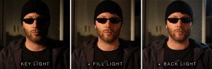

The three-point lighting system is the standard method used in photography and film, amongst other settings. This method is made up of Three light setups:
Key-light can be found in any light setup. It is the most basic light. usually the key-light is placed directly in front of the object, thus illuminating one section of the area and dependent of the colour used, it can reflect the overall mood of the compositon. proper use of the key-light reflect the dimension, volume and shadows of the object.
Fill-light is the secondary light source after the key-light. This is used to fill the rest of the object and to provide balance. The back light should be postioned on the opposite side of the key-light. The fill- light is measured by by a ration key-light: fill-light to enhance the overall desired mood of the compostion.
Back-light
is the light that lights up the back of the compistion to create depth and removes the flatness in the composition. The back is postioned at the back of the compostion as to seperate the subject with the background. It also increases the drama in the scene being portrayed.An example using the three-point light.
The image below shows how the standard Three-poin lighting should be set up.
 how to set up a Three-point light set up
how to set up a Three-point light set up